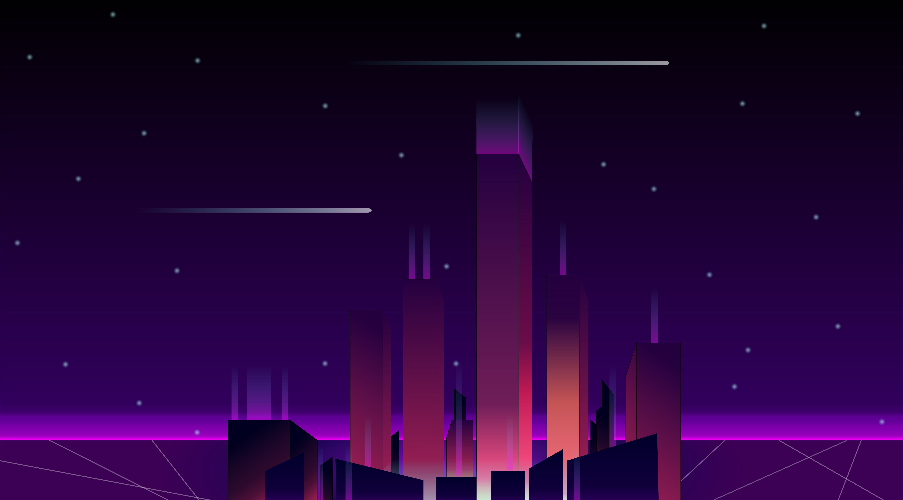

Les paysages fantastiques et futuristes
Bon là j'ai pas grand chose à dire... La première image représente une planete en verre. Comme une boule à neige... Mais dans l'espace. Je l'ai réalisé en additionnant plusieurs calque avec une faible opacité, et en ajoutant des halo de lumière... Rien de bien ouf mais le résultat est là ! La deuxième image représente quant à elle représente une ville futuriste dans un halo de lumière. Je me suis inspiré d'une pochette de CD mais je me rappelle pas du tout duquelle... j'ai essayer de faire un travail avec les couleurs pour accentuer l'effet clair/sombre. On retrouve aussi de la perspective sur les batiments.